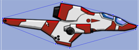
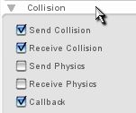
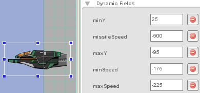
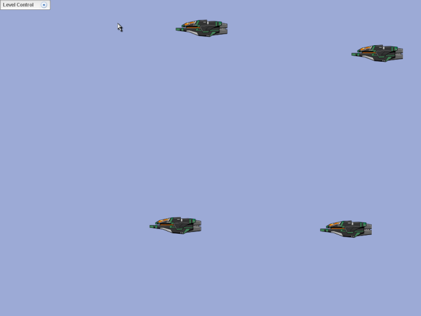

Torque 2D – Shooter Tutorial – Part 6
6. Giving Them a Fighting Chance
After a few minutes of blasting helpless enemy ships with your missiles – you may get bored with what's going on. After all, you are invincible, there is nothing that can hurt you...yet.
This section deals with adding collision to the player and giving the enemies weapons.
First, let's enable the player to collide with the other objects in the scene. You will do this very similarly to how you gave your enemies collision. Draw a collision polygon around the player ship that roughly outlines it. You might be tempted to follow its contours exactly, but that's not necessary (or possible - because the ship is concave).

Figure
6.1.2b
Now that you have your collision polygon created, we need to set its parameters in the Collision rollout of the edit tab.
You should set its collision parameters to mirror those you set for the enemy (as shown in Figure 6.1.3).

Figure 6.1.3b
Once you have your collision set, click on your enemy ship and go into their dynamic fields rollout of the edit tab. Once there you should give them a variable of missileSpeed and set its value to whatever you want, I set mine to -500 (as shown in Figure 6.1.4).

Figure 6.1.4
When you have your enemy's dynamic fields set up – it is time to code once again. Save your progress and close out of the editor. After you have closed out T2D, browse out to your yourProjectName/gameScripts folder and open your enemy.cs file. At the bottom of the file, add this function:
function enemyShip::fireMissile(%this)
{
%this.enemyMissile = new t2dStaticSprite()
{
scenegraph = %this.scenegraph;
class = enemyMissile;
missileSpeed = %this.missileSpeed;
enemy = %this;
};
%this.enemyMissile.fire();
}
Code Sample 6.1.1
This function is almost exactly the same as the one we put on our player in the last section. It does the same thing as the player's function as well, creates the missile and calls a fire function on the missile itself. Now that you have created the enemy's fireMissile function, you need to specify where exactly it will be called. For the purposes of this game, I decided that it should be called when the enemy spawns. So, find your enemyShip::spawn() function and add this line of code to the bottom of it:
function enemyShip::spawn(%this)
{
%this.setLinearVelocityX(getRandom(%this.minSpeed, %this.maxSpeed));
%this.setPositionY(getRandom(%this.minY, %this.maxY));
%this.setPositionX(%this.startX);
%this.fireMissile();
}
Code Sample 6.1.2
So, in a nutshell, whenever a ship spawns it is going to fire a missile.
After you have this code in your enemy.cs file we will need to create another file for the enemy's missile.
In your yourProjectName/gameScripts folder, create a new .cs file named enemyMissile.cs. Inside this file you need to add the following functions – again almost exactly the same as the playerMissile file:
function enemyMissile::fire(%this)
{
%this.setWorldLimit( kill, getWords(%this.enemy.getWorldLimit(), 1, 4) );
%this.setLinearVelocityX(%this.missileSpeed);
%this.setPosition(%this.enemy.getPosition());
%this.setImageMap(enemyMissileImageMap);
%this.setSize(12, 2);
%this.setCollisionActive( true, true );
%this.setCollisionPhysics(false, false);
%this.setCollisionCallback(true);
}
Code Sample 6.1.3
The first function is the fire function that was called in the enemy.cs file. This function does the mostly the same thing as the playerMissile, but here the world limit the enemy ships are using is fine for the missiles, so instead of setting it manually, we just directly copy their world limit.
After that function, paste in this code:
function enemyMissile::onCollision( %srcObj, %dstObj, %srcRef, %dstRef, %time,
%normal, %contactCount, %contacts )
{
if(%dstObj.class $= "playerShip")
{
%srcObj.explode();
%dstObj.explode();
}
}
Code Sample 6.1.4
This is exactly the same as the other onCollision function, the only thing that's different is the class it is checking for on collision. The final function we will need is as follows:
function enemyMissile::explode(%this)
{
%this.safeDelete();
}
Code Sample 6.1.5
This function deletes the missile when called.
After you get that last function in, save the file and close it. After you have closed your enemyMissile.cs open up your player.cs in the yourProjectName/gameScripts folder.
Inside your player.cs file you need to tell your player how to respond to being shot with a missile. This is going to be different than the enemy since the player can do different things than the enemy. First and foremost, we are going to add a variable that is going to store whether or not our player is dead. So, in the onLevelLoaded function at the top of the player.cs file, add this line of code:
function playerShip::onLevelLoaded(%this, %scenegraph)
{
//set the player's ship name to the instance
$pShip = %this;
moveMap.bindCmd(keyboard, "w", "pShipUp();", "pShipUpStop();");
moveMap.bindCmd(keyboard, "s", "pShipDown();", "pShipDownStop();");
moveMap.bindCmd(keyboard, "a", "pShipLeft();", "pShipLeftStop();");
moveMap.bindCmd(keyboard, "d", "pShipRight();", "pShipRightStop();");
%this.isDead = false;
}
Code Sample 6.2.1
This line of code initializes to false, since of course the player is not dead when the game starts.
Next
we will need to modify our createMissile function for the player,
since we do not want them to fire if they have been killed.
Here is the old function:
function playerShip::createMissile(%this)
{
%this.playerMissile = new t2dStaticSprite()
{
scenegraph = %this.scenegraph;
class = playerMissile;
missileSpeed=%this.missileSpeed;
player = %this;
};
%this.playerMissile.fire();
}
Code Sample 6.2.2
And here is the new function (the new additions have been bolded)
function playerShip::createMissile(%this)
{
if(!%this.isDead)
{
%this.playerMissile = new t2dStaticSprite()
{
scenegraph = %this.scenegraph;
class = playerMissile;
missileSpeed=%this.missileSpeed;
player = %this;
};
%this.playerMissile.fire();
}
}
Code Sample 6.2.3
What these changes actually do is check to see if the player is dead before creating the missile. If the player is dead, this function does nothing. Next, we need to handle the player's response to collision with the following function:
function playerShip::onCollision( %srcObj, %dstObj, %srcRef, %dstRef, %time,
%normal, %contactCount, %contacts )
{
if(%this.isDead)
return;
if(%dstObj.class $= "enemyShip")
{
%srcObj.explode();
%dstObj.explode();
}
}
Code Sample 6.2.4
This function is very similar to the other onCollision functions we have written so far. It looks for the enemy ship and destroys them both if they collide. The only difference is that if isDead is true (it is set to true when the ship explodes) it won't keep checking for collision. This stops the player from blowing up even though he has been blown up.
| ***NOTE*** You may have noticed that we never added an onCollision function to the enemy.cs file. This is because both the playerShip and the playerMissile are set up to check for collision with the enemyShip – so all of the collision is taken care of on those objects. |
Next we need to create the explode() function referenced above:
function playerShip::explode(%this)
{
%this.isDead = true;
%this.setEnabled(false);
%this.schedule(2000, "spawn");
}
Code Sample 6.2.5
What this function does is set isDead to true(meaning the player will not be able to shoot any longer). Then, it sets the player's visibility (setEnable) to false. The last line of code in this function sets a schedule that says basically that in 2000 milliseconds (2 seconds) it will run a function named spawn. Add the spawn function to the end of your file:
function playerShip::spawn(%this)
{
%this.isDead = false;
%this.setPosition(%this.startX, %this.startY);
%this.setEnabled(true);
}
Code Sample 6.2.6
This function sets isDead to false (so the player can shoot again). It also sets the player's position to variables startX and startY – two variables we will set next. Finally, it makes the player visible again. Now we need to create the startX and startY variables.
Go back to the top of your player.cs file and find the onLevelLoaded function – thus far it should look like this:
function playerShip::onLevelLoaded(%this, %scenegraph)
{
//set the player's ship name to the instance
$pShip = %this;
%this.isDead = false;
//These commands bind our keys to our functions
moveMap.bindCmd(keyboard, "w", "pShipUp();", "pShipUpStop();");
moveMap.bindCmd(keyboard, "s", "pShipDown();", "pShipDownStop();");
moveMap.bindCmd(keyboard, "a", "pShipLeft();", "pShipLeftStop();");
moveMap.bindCmd(keyboard, "d", "pShipRight();", "pShipRightStop();");
moveMap.bindCmd(keyboard, "space", "$pShip.createMissile();", "");
}
Code Sample 6.2.7
Right below our isDead declaration, add this code:
//save the players starting position %this.startX = %this.getPositionX(); %this.startY = %this.getPositionY();
Code Sample 6.2.8
You might recognize this from our enemy.cs file. What this code does is save whatever position the player is in when the game starts and saves it in two variables – startX and startY. This allows the user to choose where the player spawns at when they die.
So, after editing the onLevelLoaded function, it should now look like this:
function playerShip::onLevelLoaded(%this, %scenegraph)
{
//set the player's ship name to the instance
$pShip = %this;
%this.isDead = false;
//save the players starting position
%this.startX = %this.getPositionX();
%this.startY = %this.getPositionY();
//These commands bind our keys to our functions
moveMap.bindCmd(keyboard, "w", "pShipUp();", "pShipUpStop();");
moveMap.bindCmd(keyboard, "s", "pShipDown();", "pShipDownStop();");
moveMap.bindCmd(keyboard, "a", "pShipLeft();", "pShipLeftStop();");
moveMap.bindCmd(keyboard, "d", "pShipRight();", "pShipRightStop();");
moveMap.bindCmd(keyboard, "space", "$pShip.createMissile();", "");
}
Code Sample 6.2.9
Finally, as with all other new script files, you need to add the enemyMissile script to your exec statements in the game.cs file. When everything is said and done, your exec statements should look similar to this:
exec("./player.cs");
exec("./enemy.cs");
exec("./playerMissile.cs");
exec("./enemyMissile.cs");
Code Sample 6.2.10

Figure
6.2.1